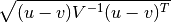

segmentation¶
LooseVersion([vstring]) |
Version numbering for anarchists and software realists. | ||
calculate_tract_profile(img, streamlines[, ...]) |
|
||
gaussian_weights(bundle[, n_points]) |
Calculate weights for each streamline/node in a bundle, based on a | ||
mahalanobis(u, v, VI) |
Computes the Mahalanobis distance between two 1-D arrays. | ||
patch_up_roi(roi) |
After being non-linearly transformed, ROIs tend to have holes in them. | ||
segment(fdata, fbval, fbvec, streamlines, ...) |
Segment streamlines into bundles. |
LooseVersion¶
-
class
AFQ.segmentation.LooseVersion(vstring=None)[source]¶ Bases:
distutils.version.VersionVersion numbering for anarchists and software realists. Implements the standard interface for version number classes as described above. A version number consists of a series of numbers, separated by either periods or strings of letters. When comparing version numbers, the numeric components will be compared numerically, and the alphabetic components lexically. The following are all valid version numbers, in no particular order:
1.5.1 1.5.2b2 161 3.10a 8.02 3.4j 1996.07.12 3.2.pl0 3.1.1.6 2g6 11g 0.960923 2.2beta29 1.13++ 5.5.kw 2.0b1pl0In fact, there is no such thing as an invalid version number under this scheme; the rules for comparison are simple and predictable, but may not always give the results you want (for some definition of “want”).
Methods
parse(vstring)-
component_re= re.compile('(\\d+ | [a-z]+ | \\.)', re.VERBOSE)¶
-
calculate_tract_profile¶
-
AFQ.segmentation.calculate_tract_profile(img, streamlines, affine=None, n_points=100, weights=None)[source]¶ Parameters: img : 3D volume
streamlines : list of arrays, or array
weights : 1D array or 2D array (optional)
Weight each streamline (1D) or each node (2D) when calculating the tract-profiles. Must sum to 1 across streamlines (in each node if relevant).
gaussian_weights¶
-
AFQ.segmentation.gaussian_weights(bundle, n_points=100)[source]¶ Calculate weights for each streamline/node in a bundle, based on a Mahalanobis distance from the mean of the bundle, at that node
Parameters: bundle : array or list
If this is a list, assume that it is a list of streamline coordinates (each entry is a 2D array, of shape n by 3). If this is an array, this is a resampled version of the streamlines, with equal number of points in each streamline.
n_points : int, optional
The number of points to resample to. If the `bundle` is an array, this input is ignored. Default: 100.
Returns: w : array of shape (n_streamlines, n_points)
Weights for each node in each streamline, calculated as its relative inverse of the Mahalanobis distance, relative to the distribution of coordinates at that node position across streamlines.
mahalanobis¶
-
AFQ.segmentation.mahalanobis(u, v, VI)[source]¶ Computes the Mahalanobis distance between two 1-D arrays.
The Mahalanobis distance between 1-D arrays u and v, is defined as

where
Vis the covariance matrix. Note that the argument VI is the inverse ofV.Parameters: u : (N,) array_like
Input array.
v : (N,) array_like
Input array.
VI : ndarray
The inverse of the covariance matrix.
Returns: mahalanobis : double
The Mahalanobis distance between vectors u and v.
patch_up_roi¶
-
AFQ.segmentation.patch_up_roi(roi)[source]¶ After being non-linearly transformed, ROIs tend to have holes in them. We perform a couple of computational geometry operations on the ROI to fix that up.
Parameters: roi : 3D binary array
The ROI after it has been transformed
Returns: ROI after dilation and hole-filling
segment¶
-
AFQ.segmentation.segment(fdata, fbval, fbvec, streamlines, bundles, reg_template=None, mapping=None, as_generator=True, clip_to_roi=True, **reg_kwargs)[source]¶ Segment streamlines into bundles.
Parameters: fdata, fbval, fbvec : str
Full path to data, bvals, bvecs
streamlines : list of 2D arrays
Each array is a streamline, shape (3, N).
bundles: dict
The format is something like:
{'name': {'ROIs':[img, img], 'rules':[True, True]}}
reg_template : str or nib.Nifti1Image, optional.
Template to use for registration (defaults to the MNI T2)
mapping : DiffeomorphicMap object, str or nib.Nifti1Image, optional
A mapping between DWI space and a template. Defaults to generate this.
as_generator : bool, optional
Whether to generate the streamlines here, or return generators. Default: True.
clip_to_roi : bool, optional
Whether to clip the streamlines between the ROIs